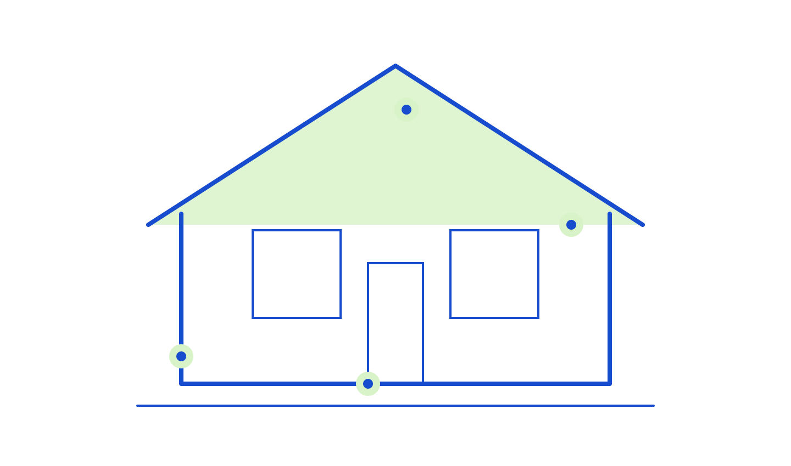
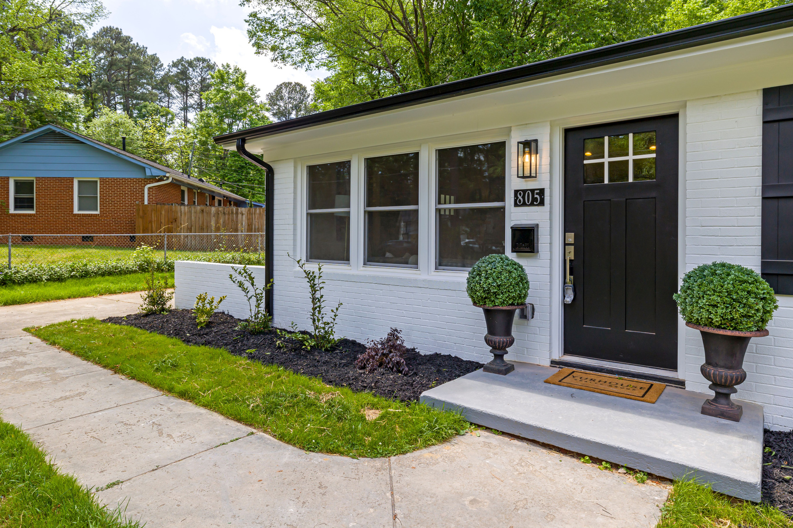
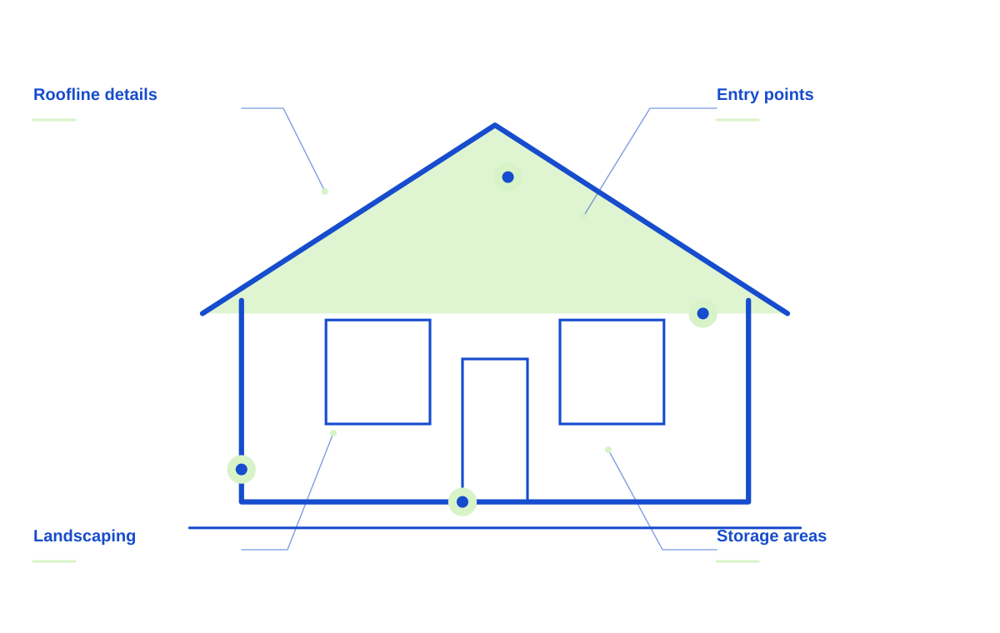
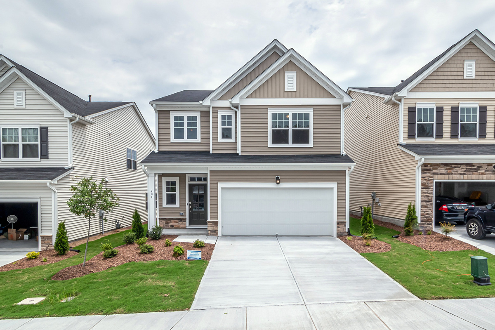
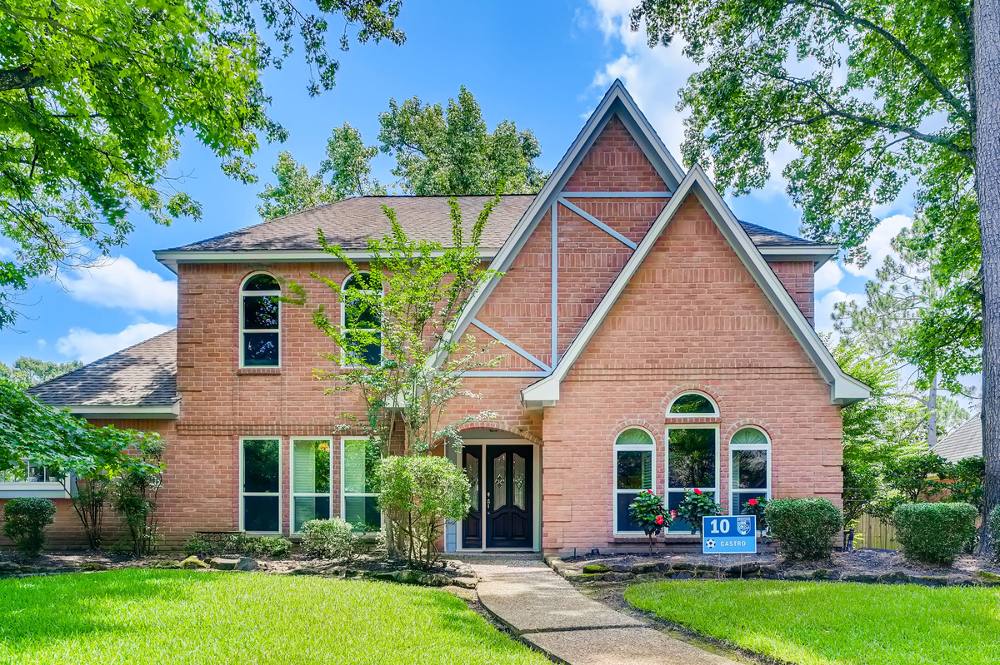
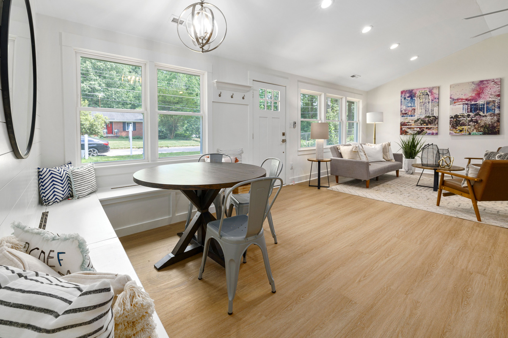

Home pest visits
Discuss the activity you’ve noticed and the areas that need a closer look.

A practical pest management plan starts with understanding your property, the activity you’ve noticed, and what matters to your household.
Tell us what you’re seeing ↗
Every property is different. We discuss the activity, the likely access points, and the practical steps that make sense for your home.
Discuss the activity you’ve noticed and the areas that need a closer look.
Look at potential entry points and talk through a practical plan.
A service conversation around changes in weather and pest activity.
Attention to access points, conditions, and the next useful steps.
A useful pest conversation brings together what you have seen, where you have seen it, and the conditions around the property.

HIGHLINE PEST / THE DETAILS MATTERDescribe the rooms, locations, and timing of the activity you have noticed.
Gaps, access areas, landscaping, and storage can be useful details to discuss.
Review the proposed visit, preparation, household considerations, and the next steps included.

Weather, landscaping, gaps, storage, and everyday habits all shape the picture. A useful conversation considers the setting as well as the activity.


Start with the property, your priorities, and the details you want us to understand.
Talk through suitable options, practical access, and the work you want included.
Review the proposed scope and ask questions before deciding on the next step.
When you get in touch, a little context goes a long way. These are the details that help us start a useful conversation about your pest management project.
Tell us what you have in mind ↗Tell us about where you see activity so the conversation starts with your situation.
A few details about when you first noticed it help us understand what you need.
Share property conditions when you get in touch, including photos where useful.
Let us know about household considerations so the proposed scope reflects your priorities.
Yes. Photos and a description of where and when you have noticed activity are a useful starting point.
We will discuss preparation and access for your particular service, including any household considerations.
Yes. Tell us about gaps, access areas, or changes around the property that concern you.
A practical pest management plan starts with understanding your property, the activity you’ve noticed, and what matters to your household.